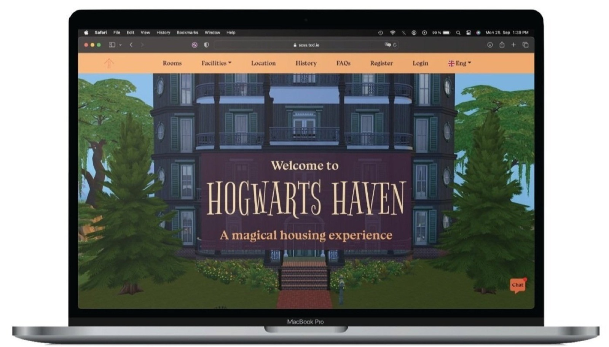
Hogwarts Haven
This brief group project was assigned in a college module in which HTML/CSS are taught. The project brief was to design a full-fledged website from scratch, in a group of four, on any topic related to buildings.
Background
What building could we focus on?
The ideation was done briefly, orally, during the first group meeting. With little time to spare for this project, reaching a decision fast was crucial. Other groups were aiming to create websites around real buildings throughout Ireland, which gave us the idea to create our website on a fictional building: Hogwarts, from Harry Potter.
The project deliverables required addressing: Who is the target user? What is the website's user value proposition? Who are the competitors?
When faced with these questions, the concept developed to targeting a real-world issue faced by students in Dublin: dealing with the major housing crisis. Could we design a website advertising a utopian housing service (borrowing ideas from Hogwarts) that highlights real issues?
Ideate
A utopian pitch
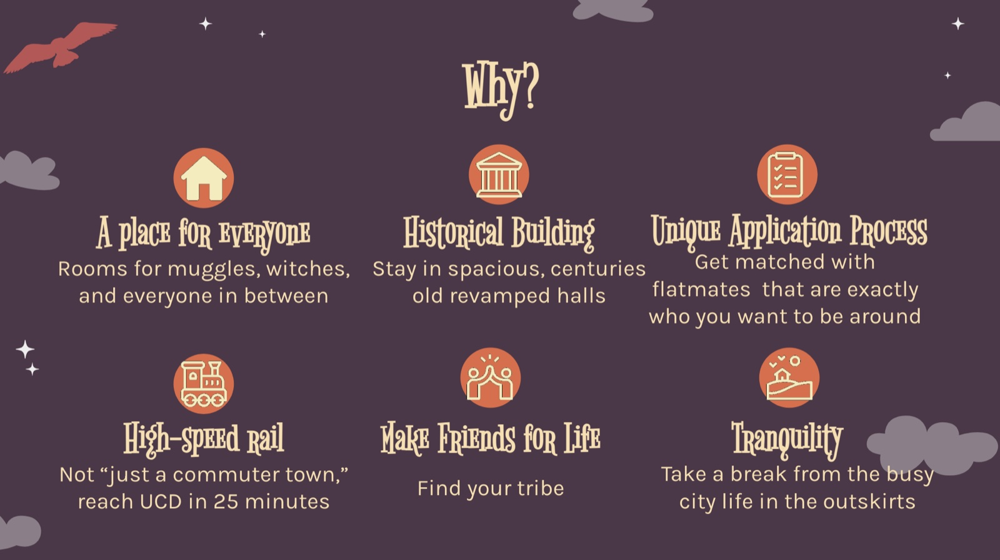
Ultimately the goal of the assignment was to demonstrate our HTML/CSS skills, and a housing website could do this quite well due to the menus, media, and structures of the pages required.
Define
Learning from the competition
Our research first revolved around a comprehensive competitive analysis, examining four leading websites in the housing domain in Dublin. We did a deep dive into their user interface structures and user experience flows, paying close attention to their navigation schemes, functionalities, and overall aesthetic appeal.
Beyond the surface-level features, we delved into the underlying strategies that made these websites effective: site mapping, content organization, clarity of information, and the ways in which they engaged users. Accessibility and responsiveness were major factors as well. The investigation identified what these competitors did well and, conversely, gaps and shortcomings in their approaches.
We sought to understand user pain points and frustrations, gathering insights from user reviews and our own experiences — each of us had also found housing via a student housing service.
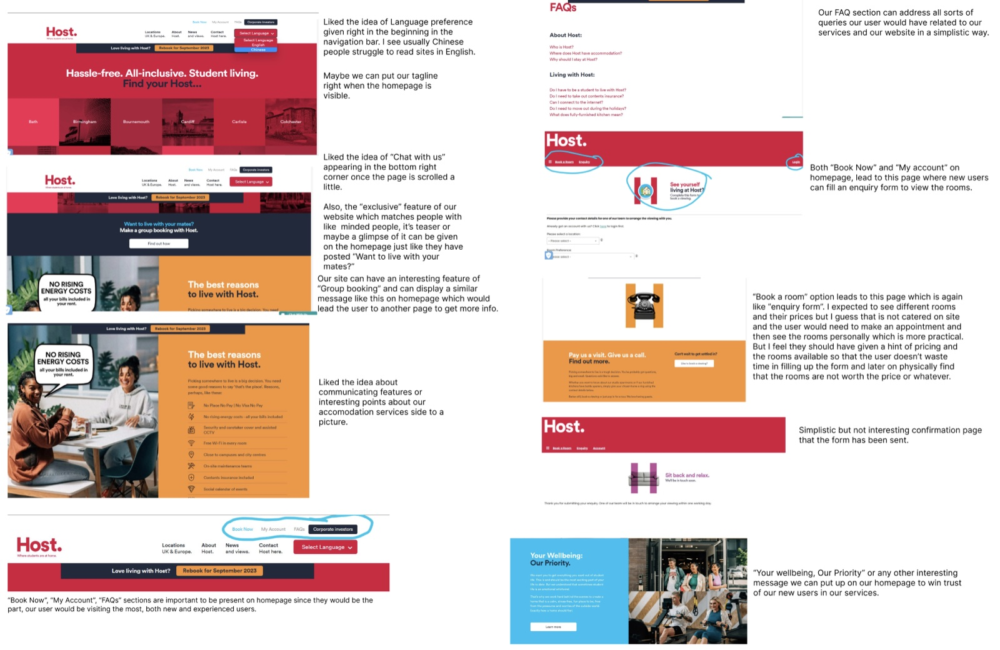
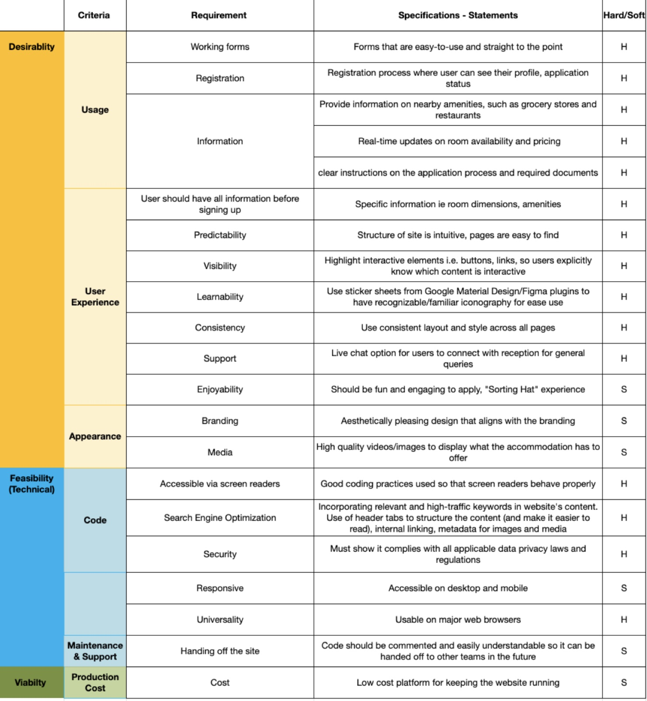
Hogwarts Haven addresses the critical gap in the student accommodation market by offering high-quality and accessible housing options. Situated just outside Dublin, it provides affordable living spaces with convenient access to public transport. The unique application process assesses each student's individual needs, ensuring a diverse and equitable community that transcends barriers. The value proposition
Information architecture
The research helped us create a sitemap loosely based on the competitors' sites. We tested accommodation sites to find which elements lead to the best user flow. After starting wireframing, this sitemap was iterated on for improvements. The wireframes also underwent several iterations, as in any design cycle.
Create
From wireframes to a working site
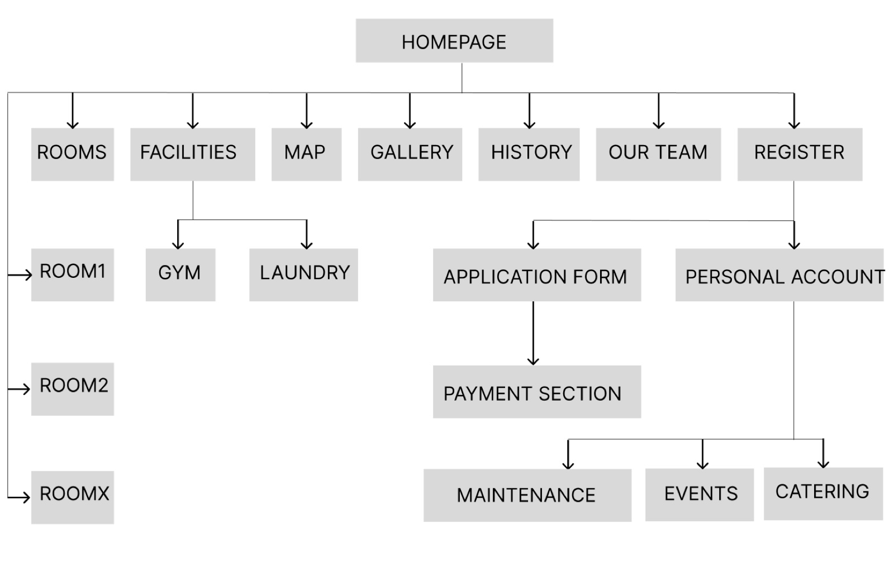
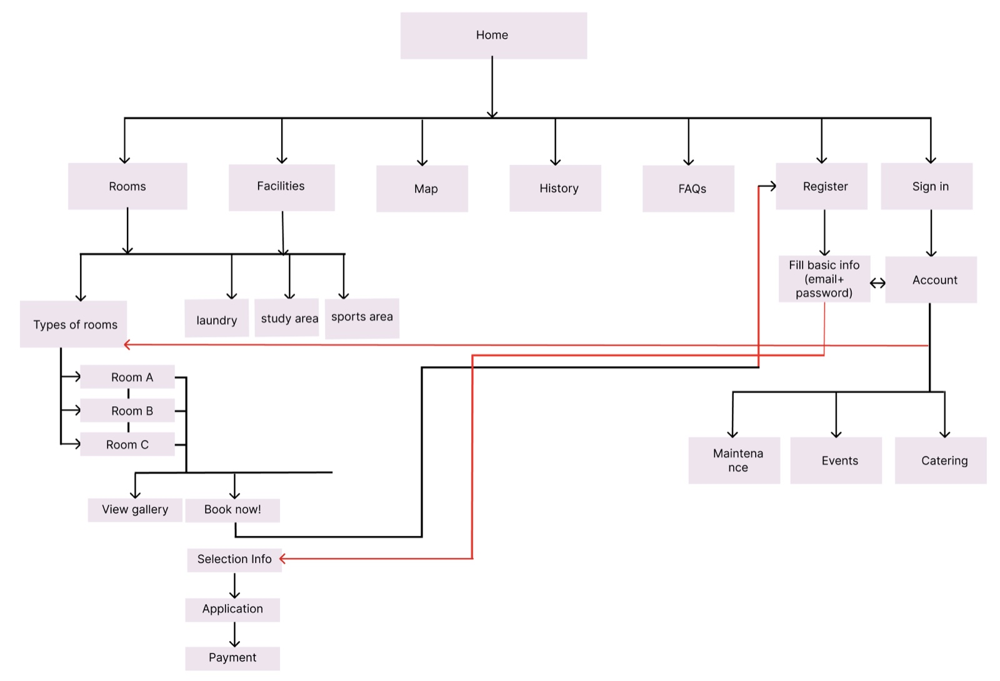
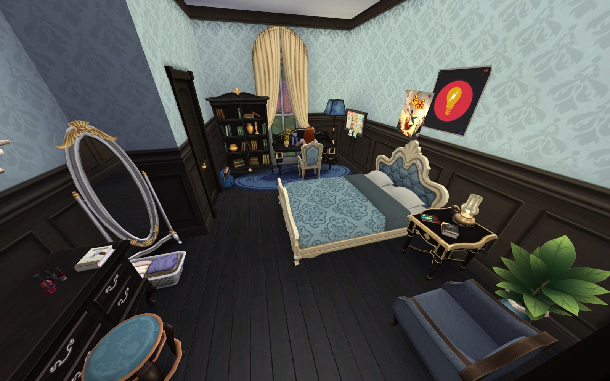
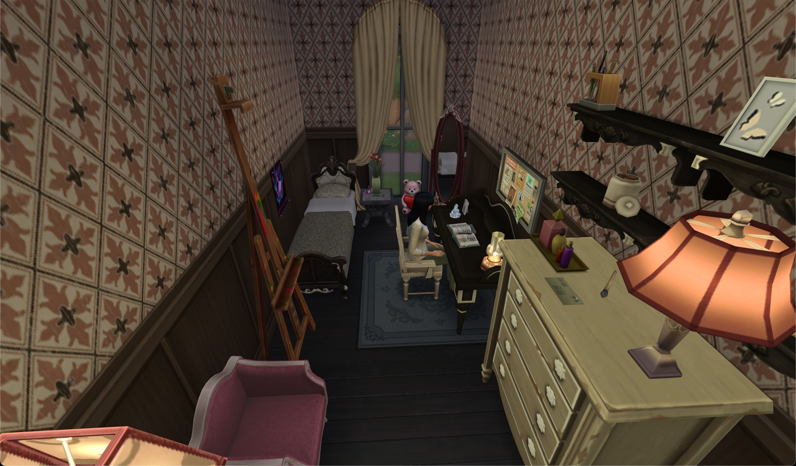
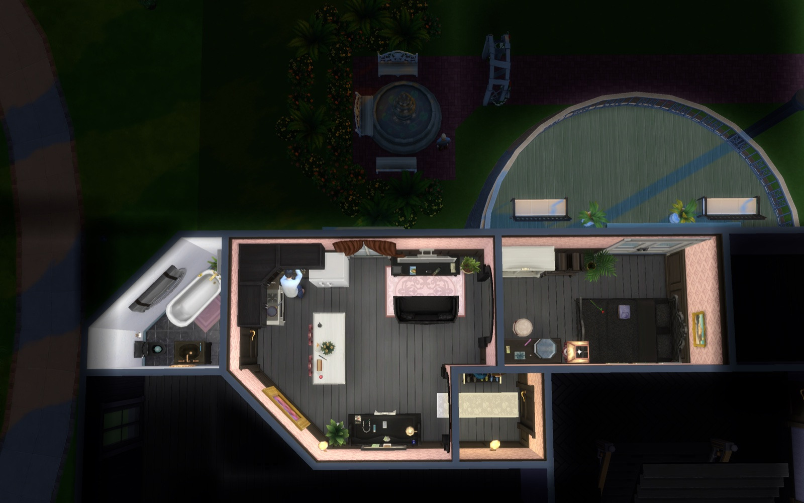
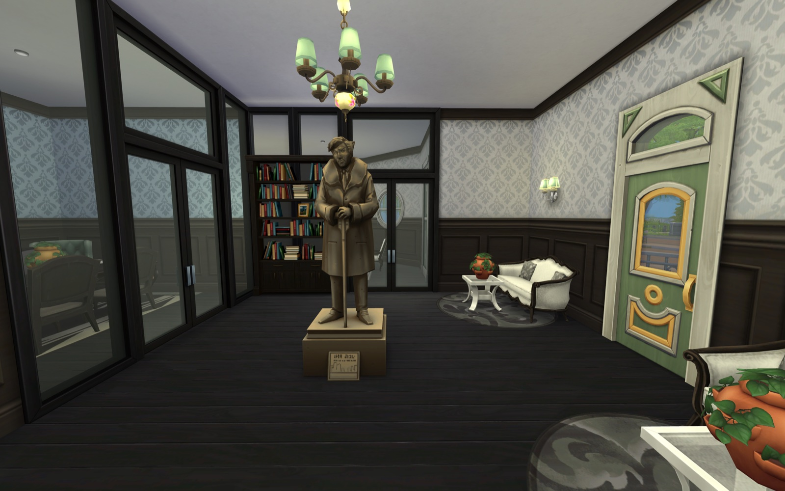
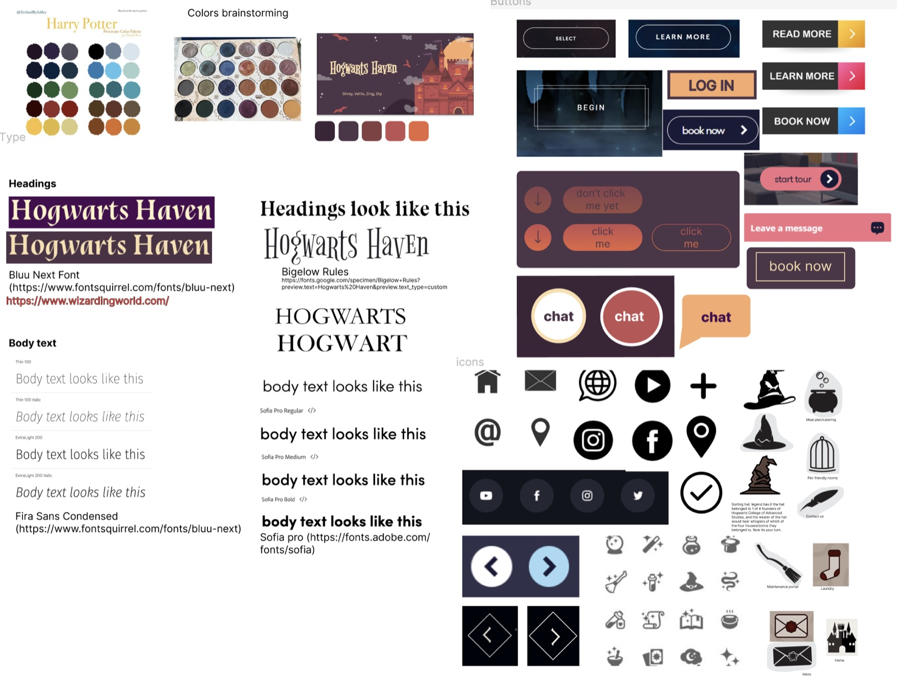
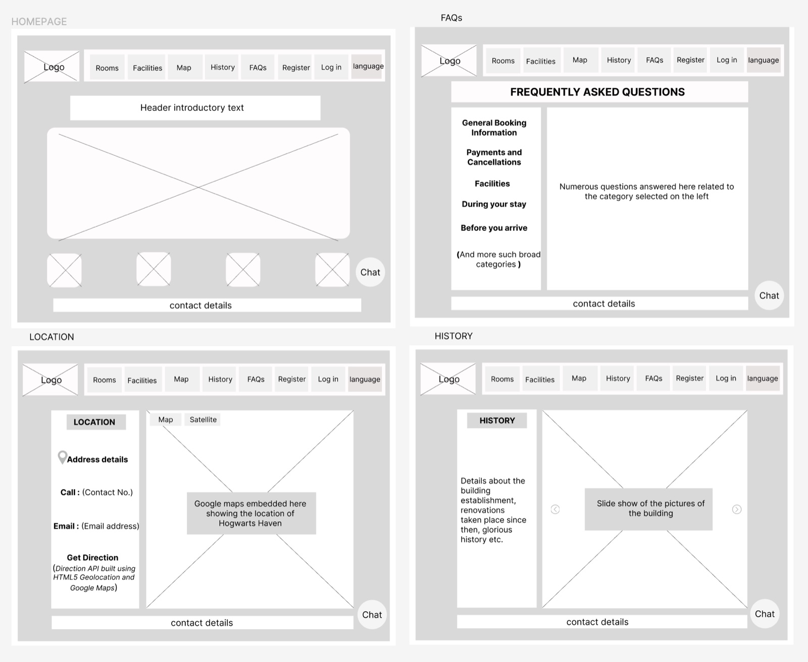
Prototyping
A wireframe was made for every screen in the sitemap and the user flow was then tested within Figma.
Ideating for the stickersheet, a similar color palette to the pitch slide deck was chosen. These colors had a high contrast. The main typeface used throughout the website was simplistic, and for headings a serif font was used — these points were vital for accessibility. Common material design icons were chosen, but with slight stylistic changes to suit the Hogwarts theme.
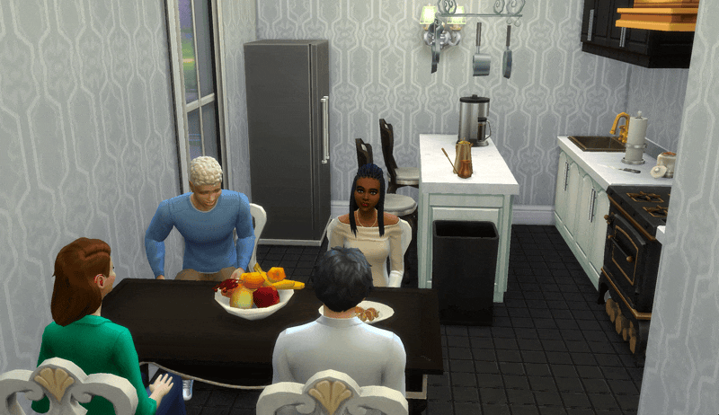
Gathering content
The other groups completing this project used real buildings to base their websites on, and had plenty of source material to use. While there are images of Hogwarts online, it was difficult to find clear images of the housing to display on our site.
Using the computer video game Sims 4, I created several different types of rooms and common areas — a fitness suite, laundry room, study areas, and a reception — using furnishings and decor to resemble Hogwarts as depicted in the movies and books. Several screenshots were taken of the inside environments as well as the outside that could then be displayed on the site.
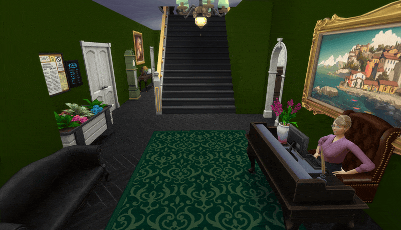
Project requirements included the creation and management of an Instagram account to effectively market our website. Using a combination of the accommodation screenshots and online resources, we rapidly populated the account with promotional posts, drawing inspiration from the social media strategies of established student housing services.
Additionally, we developed a comprehensive slide deck for our final presentation, meticulously detailing the site's functionality and its adherence to various industry standards.
Outcome
Visit the Haven
Watch a demo video to tour all features of the site — or visit Hogwarts Haven yourself.
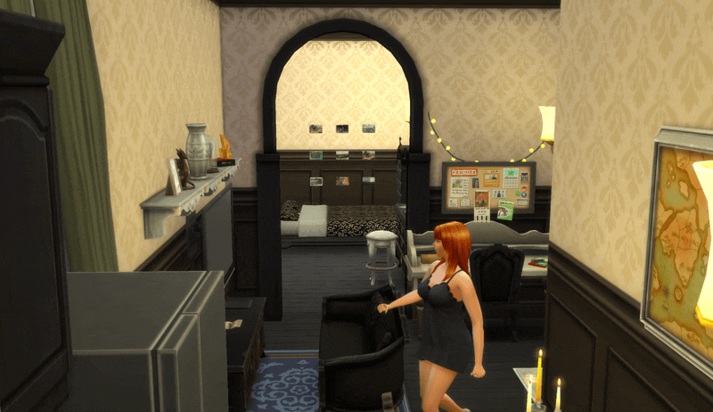
Site highlights
- Advanced code structure: implemented with HTML, CSS, JavaScript, and Bootstrap, featuring modular and maintainable file organization.
- SEO optimization with semantic HTML: extensive use of semantic tags like
<header>,<nav>,<main>, and<footer>. - Uniform UI components: consistently designed navigation bar and footer across all pages, embedding brand identity and essential links.
- Dynamic chatbot integration: a model chatbot implemented in JavaScript with show/hide functionality for real-time user engagement.
- Responsive and cross-device compatible: meticulously tested for mobile responsiveness across iPad mini, iPad Air, and various Android and iPhone models.
- JavaScript-powered Google Maps integration: a "Get Directions" feature leveraging the browser's geolocation API.
- Intuitive user forms: user-friendly forms for registration, login, and data collection, plus specialized forms to match user preferences with housing options.
- Interactive FAQ section: an accordion-style layout with Bootstrap for streamlined access to information.
- Lighthouse performance excellence: high scores for performance, accessibility, best practices, and SEO.
- Accessibility enhancements: tested with tools like WAVE, striving for WCAG 2.1 Level AA compliance with every update, including up to 200% zoom capability.
Reflection
What I took away
This project represented a significant achievement, demonstrating both creativity and practical application. We developed a distinctive concept, blending imaginative freedom with real-world relevance. In-depth research — including an analysis of existing student housing sites in Dublin and our personal experiences — gave us a profound understanding of the challenges students face and the existing market gap for quality student accommodations.
The development of the website from the ground up using HTML/CSS presented a formidable challenge. Learning how to use Bootstrap was difficult at first. We rigorously applied WAVE and various accessibility tools to ensure responsive design, adhering to stringent coding standards. Our commitment to organization and meticulous attention to detail from the project's inception was vital in achieving our successful outcome.